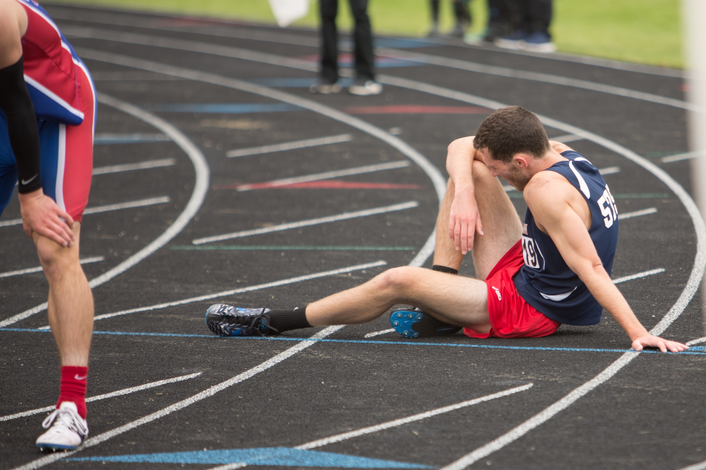

Karın Kası Nasıl Yapılır?

Herkesin hayal ettiği bir vücut yapısı vardır. Genellikle hem kadınların hem de erkeklerin hayallerini süsleyen karın kaslarını oluşturmak da bunlardan bir tanesidir. Karın kası oluşturmak düzenli ve doğru şekilde yapılan aktivitelerle mümkündür. Ancak doğru teknikleri bilmek ve istikrarlı şekilde devam etmek şarttır. Eğer imkan varsa bir spor salonuna yazılmak ve program oluşturmak gerekir. Spor salonunda alanında uzman kişilerle beraber program oluşturmak, ideal vücut yapısını kazanmayı sağlar. İş ya da yoğunluk gibi nedenlerle spor salonuna gidemeyen kişilerin ise üzülmesine hiç gerek yoktur. Çünkü evde de karın kası yapmak mümkündür. Kişinin kendi vücudunu tanıyarak bir program oluşturması ve uygulamaya koyabilmesi, kısa zamanda hayal ettiği vücuda kavuşmasını sağlar. Spor programı oluştururken dinlenmek için de günler ayrılması gerekir. Program oluşturmakta zorlanan kişiler, profesyonel birinden yardım alabilir. Esneme hareketlerini yaptıktan sonra yavaş tempolu hareketlerle karın kası çalışmalarına başlayabilirsiniz.
Kas Ağrıları Neden Kaynaklanır?

Spor Sonrası Ağrılar Neden Olur?
Spor yapmak her ne kadar keyifli bir aktivite olsa da, egzersiz sonrası yaşanan ağrılar yaşamı zorlaştırabiliyor. Ancak sağlıklı bir yaşam için yoğun ağrılarla boğuşmak gerektiğini düşünüyorsan bu doğru değil. Eğer ilk egzersiz sonrası yaşadığın ağrılar nedeniyle pes etmeye meyilliysen bir kez daha düşünmelisin. Sen de doğru ısınma, soğuma, doğru egzersiz, beslenme ve ağrı azaltmaya yönelik uygulamalarla spor sonrası kas ağrılarının üstesinden gelebilirsin. Peki kas ağrıları spor sonrası neden kaynaklanır biliyor musun? Doğru müdahale ve çözüm için önce nedeni tüm detaylarıyla öğrenmelisin. Kas ağrıları spor sonrası oluşuyor ve nedeni uzun süre hareket etmemiş kasların hareketler nedeniyle harekete geçerek hafifçe zarar görmesi olarak tanımlanıyor. Diğer bir deyişle, uzun süre hareket etmeyen kaslar, yoğun egzersiz sonrası mikroskobik boyutlarda yırtılıyor. Kulağa korkutucu gibi gelse de aslında bu olağan bir durum. Zira kaslar yenilenmek için yıkıma uğruyor ve doğru egzersiz, ısınma, beslenme ve yardımcı uygulamalarla kaslar hızla onarılarak daha güçlü hale geliyor. Üstelik kas ağrılarını tetikleyen ve artıran bazı sorunlar da var. Örneğin vücutta yeterli su olmadığında, elektrolit dengesizliği yaşandığında, kaslarda oksijen tükenip laktik asit biriktiğinde kas ağrıları daha şiddetli oluyor. Ancak bilim dünyasındaki yeni görüşler arasında; kaslarda birikenin laktik asit değil, doku hasarına bağlı iltihap olduğu ileri sürülüyor. Bu görüşe göre doku hasarına bağlı gelişen enflamasyon kas dokusunda yoğunlaşıyor ve spor sonrası kas ağrıları meydana geliyor. Spordan sonra kas ağrısı hissediyorsan, bol bol su içmeyi ihmal etmemelisin. Vücutta oksijene ihtiyaç olduğunu aklında tutarak yeterli miktarda su içmeli, serbest radikallerle savaşmaya yardımcı olan detoks içeceklerine, antioksidan meyve ve sebzelere beslenme rutininde daha çok yer vermelisin. Örneğin kırmızı sebzeleri, yeşillikleri tüketmeye devam edebilirsin. Ancak çok şekerli ve tuzlu yiyeceklerden uzak durmayı tercih etmelisin.Diğer taraftan, spor sonrası oluşan kas ağrılarının tek nedeni kaslardaki atık birikimi değil. Yanlış kıyafet ve ayakkabı seçimleri, denge kaybı veya hareket kısıtlanması da spor sonrasında rahatsızlık verebiliyor. Ani ve yanlış hareketlerin ana nedenlerinden biri denge sağlanamaması oluyor. Egzersiz sırasında denge kaybı dolayısıyla yapılan beklenmedik hareketler ağrıyı da beraberinde getiriyor. Denge ve stabilite için doğru sporcu ayakkabısı modellerini giyerek spor yapmalısın. Buna ek olarak vücudunu sıkan kıyafetler giymemeli, rahat hareket sağlayan esnek kumaşları tercih etmelisin. Örneğin erkek eşofman altı alırken hareket özgürlüğü sağladığından emin olmalısın. Ancak eğer sert hareketler içeren sporlar tercih ediyorsan burada sıkı kıyafetler giyilerek kasların desteklenmesi gerekebiliyor. Mesela kadın koşu ayakkabısı giyerek yüksek tempolu bir koşu rutinine başlamadan önce kaslarını destekleyecek nitelikte olan özel kadın spor tayt modellerini tercih etmelisin.